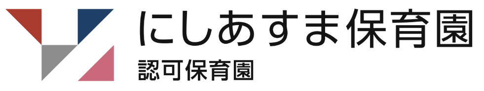
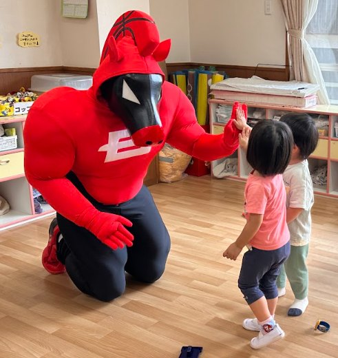

HOME›病児保育
保育施設に通所しているさいたま市在住のお子さんが、病気または病気回復期のため集団生活が困難な期間に、看護師・保育士がお子さんをお預かりします。
次の（1）～（3）の全てに当てはまるお子さんです。
病児保育室 西遊馬保育園の概要（PDF）

見学やご入園のこと、病児保育のことなど、お気軽にお問い合わせください。
開園時間：平日 7:15〜19:15／土曜 7:15〜18:15
見学・ご相談は、お気軽にどうぞ。